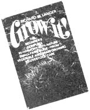
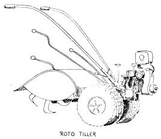
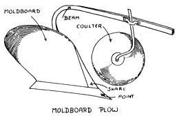
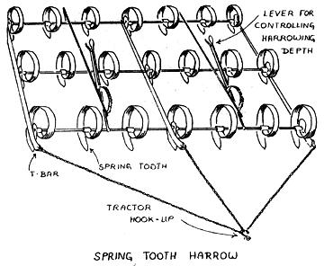
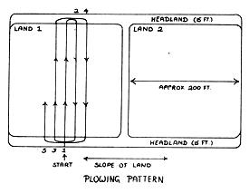
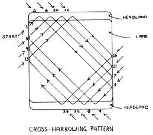
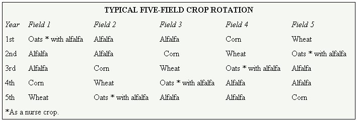

Grow It!
September/October 1972
SPECIAL NOTE: GROW IT! is a big book and even if a chunk this size were to be run in issue after issue after issue of MOTHER, it would take over two years to put the complete volume in your hands. If you haven't got two years to play around with, we recommend that you truck on down to your nearest book store and shell out $8.95 for your very own copy of GROW IT! That way, Richard Langer will be happy, Saturday Review Press will be happy . . . and we're betting that you'll be happy too. It's a darn good book.
At last! For the first time since the HAVE-MORE Plan was published way back in the 1940's, a fellow named Richard W. Langer has come up with a 365-page book that really introduces a beginner to small-scale farming. Wanna raise your own fruit, nuts, berries, vegetables, grain, chickens, pigs, ducks, geese and honeybees? GROW IT! tells you how to get started, we like it, and here's chapter two from the book.
EXTRA SPECIAL NOTE: All material here reprinted from GROW IT!
Copyright © 1972 by Richard W. Langer.
CHAPTER TWO: tillage
He that by the Plough would thrive,
himself must either hold or drive.
-BENJAMIN FRANKLIN
All right, there you are with several acres of land in front of your nose, and maybe, by your side, a tractor and plow you decided were the proper things to have on a farm. What do you do? Plow, of course. But how and where? Well, first let's look at the equipment. Even if a neighbor comes in to help plow and seed the fields the first couple of years, you'll still need to know what the equipment is all about. A farmer is willing to help and more than willing to teach you, but he's not going to do the work while you sit back in your rocker on the porch. Also you'll find it's easier and less expensive than you think to get some of your own equipment. You'll certainly want to do your own plowing. After all, that's what farming's all about.
The simplest and cheapest tools to cultivate your land with are a spading fork or shovel and a rake. You dig up the soil and turn it over, trying to keep most of the topsoil, which is darker, richer, and looser than the subsoil, just where it was . . . on top. At the same time you are breaking up the clods of earth and loosening the soil to improve aeration. That's tillage, good old-fashioned, primitive style. With this help roots can grow more easily, and better roots mean better plants. In most cases, you'll find that the topsoil is a layer six to twelve inches thick. Very poor soil may have only a couple of inches worth. Some fortunate California valleys have topsoil thirty feet thick.
After the digging and clod-breaking, the ground should be loose and crumbly. This, however, isn't enough. You'll be planting tiny seeds or seedlings. The young early roots need more help than that. Rake the soil back and forth until all the particles to a two-inch depth are very small. The surface layer, especially in the vegetable garden, should have a particle size half that of a dime or less. However, don't tamp down the ground perfectly smooth or water penetration will be affected. Leave rake furrows on the surface to aid drainage.
All this is fine for a small vegetable plot. But think of it in terms of an acre, or even only half an acre, and just the thought will leave you panting. There is a solution to this backbreaking problem-albeit one that will shatter your peaceful country silence for the duration-a kind of small farmer's walking tractor or horseless plow.
EQUIPMENT
Rotary Tiller . The rotary tiller is a noisy but efficient little back-saver. This machine is almost a must for a garden of any size. It is simple to operate and easy to maintain. Usually it is no more than a power lawn mower, except that instead of cutting grass, it digs the soil for you. It will also dig in manure, both green and barnyard, compost materials, lime, and what have you.
Rotary tillers usually come with wheels mounted in front to pull the digging blades, or wheels in back to keep the machine steady. The front-puller models are easier and smoother to operate, in fact no more difficult to manage than a power mower. Those with rear-mounted wheels are less expensive. For a real back-jolting thrill, try one of the cheaper, older rotaries that don't use wheels at all, but drag themselves along by the digging blades . . . you balance them and steer the course. It's about like holding onto the tail of a rampaging drunk kangaroo.
You'll find a rotary tiller cuts your gardening work to a fraction of the time the shovel method takes . . . it still isn't sufficient when you're considering a field of, say, even five or six acres. What with waiting for the ground to be plowable and still trying to get the seeds in as early as possible to extend the growing season, you won't have the spare month or two you might need to rotary till half a dozen acres. You'll either have to trade labor with your neighbor or get a tractor and plow. The latter alternative is not as costly as you might think, simply because you don't need the latest super-rig. One of the old, semiabandoned tractors no longer economically viable for the professional farmer will do you fine. You'll even find that they are often cheaper than a new rotary tiller. A farm auction is a good place to pick up old equipment cheap.
Tractor. Tractors come in various horsepower, but this isn't really a good way of telling whether they will meet your needs. What you want is a tractor that can draw a one- or two-bottom plow, that is, a plow that turns one or two furrows at a time, respectively. It will do fine no matter what its horsepower.
Don't fool around with garden tractors or the oversized lawnmower variety. They'll only be a waste of time and money. If you're going to get a tractor, go straight to the real thing.
There are several pieces of auxiliary equipment you might consider picking up to go with your tractor. Not all at once, of course. But country auctions are a lot of fun, and once you've been, you'll probably be hooked on them. Not just for equipment, but comfy old furniture for your home, and occasionally even livestock.
The first thing to remember in buying auxiliary equipment is that whatever you get has to be compatible with your tractor. If you have a small, older tractor capable of pulling a onebottom plow, it's not going to do you any good to get a five bottom plow unless you enjoy sitting with your tractor and plow in the middle of a hot field with your engine flat out, not going anywhere. Most equipment will have a tractor hookup compatible with your tractor. Note the word most . . . not all. Be sure to check that whatever you get can in fact be hooked up without major adjustments.
Plow. You may find your first major tractor attachment, the plow, comes with the tractor. This is because of the two major types, trailer plows and mounted plows . . . the latter, as its name implies, comes mounted on the tractor.
If they don't come as a combination, you'll probably have to get a trailer plow. Chances are you won't be able to find a mounted plow to fit. The trailer plow is preferred anyhow . . . it does a better job. On the other side of the coin, if you're tossing for it, a mounted plow is easier to maneuver.
Trailer plows are of two varieties, the moldboard and the disc. The disc plow is in Louis Bromfield's estimation just about the greatest step forward in tilling since primitive man first scratched furrows in the earth with a forked stick. It has several huge steel wheels five feet or so in diameter, all running on one axle, that literally chop up the soil, digging deep for aeration and breaking all the clods. It's particulary good for incorporating organic matter far down into the soil when trash-mulching, that is to say, burying field plants after harvesting by turning the soil over on top of them. Working like one of the old-fashioned spinach choppers of European kitchens, it prepares the ground for planting in one coordinated operation.
Unfortunately, as effective as they are, particularly on heavy clay soils, you'll see few disc plows around. Unless you're working with two, maybe three hundred acres or more, they're just too big and expensive. Think of them as thousand-acre rototillers.
This leaves you with the old traditional moldboard plow. There's nothing wrong with a moldboard plow, however, as long as you use it right and remember that plowing alone won't be enough to get your soil in shape for planting. You'll have to harrow the field as well.
The moldboard plow is the kind the urbanite expects to see on the farm. It has a blade or blades like half a heart, curved to dig into the soil, lift, and turn it over. At the lower edge of the "bottom" is the point on which it rides, and at the front of the moldboard is the share, which cuts the soil. You will no doubt break a few points while you're learning the ins and outs of using your plow. Cheer up. They're replaceable. Each bottom makes a furrow, casting a row of molded earth to one side. On the arm, or beam, holding the bottom and in front of it is a coulter. This is either a wheel or a mini-plowshare that precedes the plow to open the sod. The coulter doesn't always have to be lowered, but with heavy sod, or heavy mulch such as cornstalks, plowing without it is impossible. The wheel coulter is the preferred type since it won't snag cornstalks or long-stemmed green manure.
With a one-bottom plow you'll make one furrow at a time, with a two-bottom plow two at a time, and so on. Since a two-bottom plow will cut the number of passes you have to make up and down the field by 50 percent, it's well worth getting if you can. But again, don't buy a bigger plow than your tractor can handle.
Moldboard plows are divided into three general classes by the shape of the moldboard: stubble, sod, and general-purpose plows. The stubble plow has a short, steeply pitched blade that breaks the soil into relatively fine particles. However, it can only be used on land that has been cultivated for some time. Try to use it on sod or overgrown pasture land that has not been worked for decades, and its sharply curved moldboard will dig in rather than plow. You'll get nowhere. For the purpose of breaking sod, the sod plow has a very long, narrower moldboard with considerably less pitch. It won't pulverize the soil as well as the stubble plow, but it will turn over fields that could not be worked otherwise. Halfway between these is the general-purpose plow, the one you'll most likely use.
Chances are, since your neighbors will be working soil not too different from yours, if you get your plow at a local auction it will serve your purposes admirably. You may even find one lying in back of your barn, but in that case be prepared to do an awful lot of cleaning. You've heard of a greased pig. Well, how about a greased plow? A plow blade must be smooth and clean or the amount of energy needed to pull it through the field increases immensely. Always clean your moldboard after plowing. You don't have to dry it like fine china, but if it's going to stand around without being used for a while, it should be covered thoroughly with grease to prevent rust.
Your neighbor might very well have an old plow around he'll be more than happy to trade you for something. This is about the best way to acquire it, since you'll need him to show you how to plow. Don't be discouraged, it's a real art when done right, and will take quite a bit of practice. But then again, you wouldn't expect to be able to walk on your hands the first time you tried it either. And the switch from pushing a pencil in the city to working the soil in the country is certainly no less radical a flip-flopping of your world.
Harrow. If the plow is your supersized spading fork, the harrow is your streamlined rake. Harrows come in two main types, spring-tooth and disc. You may have to settle for a spring-tooth harrow in the beginning. But try to get a disc harrow if you can. Although it is both more expensive and more finicky about its maintenance, these drawbacks are more than compensated for by its versatility. Where two passes with a disc harrow might suffice for a good job on your field, using a spring-tooth harrow you'll have to go over the same field three or four times. And thick-stemmed crops such as corn or sunflowers can be stubble-mulched directly into the field again with the disc model after harvesting. That is to say, all the stalks and stubble are worked right into the soil by running the heavy disc harrow over the field a couple of times. The discs cut up the stalks and bury them. A spring-tooth harrow run over this kind of field would simply jam up.
The spring-tooth harrow looks like four huge combs with curved teeth, mounted one after the other, with a flexible backbone. As you pull the harrow across the field, these teeth break up the lumps of soil. Each tooth hits the soil, is pulled back, and snaps forward with a vibrating chomp, shattering the clump. The teeth all work together, a lot of busy fingers crumbling the soil. On a disc harrow the spring teeth have been replaced by discs that work the soil and break up the plow lumps.
Broadcaster and Grain Drill. You can sow most seeds by either broadcasting or drilling. Broadcasting is simply scattering the seeds evenly over the desired area. You fill up an old shoulder-strap bag and then walk the fields, scooping out a handful of seeds and flinging them from your hand in a wide arc. But the simplicity of this age-old method is deceptive. It takes quite a bit of practice, not only to sow the seeds evenly, but to scatter the right number of them per acre.
To help you out, there's a simple and inexpensive device that does your spacing for you, though you still have to do the walking. It's a bag with a crank and spout. You hang it over your shoulder and turn the crank as you stroll along . . . a continuous stream of seeds is forced out the spout in a fanlike pattern, to be buried by the elements. The instructions accompanying the device will tell you how fast to turn the crank and at what setting each size seed should be sown. The broadcaster is sufficient equipment to take care of several acres. If you have more than that to seed, you'll want a grain drill.
A grain drill is also a reasonably simple machine and relatively inexpensive if bought used. Basically it's just a long horizontal hopper on wheels. Full of grain, it is pulled behind the tractor, and leaves the seed in a nice evenly distributed pattern known as drills. The seeds are buried by the action of melodiously tinkling chains dragging behind the grain drill. The drills here, incidentally, have nothing to do with holes, as one might imagine when thinking of a drilling machine . . . in this case the term refers to the long rows in which the seeds land. The grain drill has gears and openings that can both be adjusted to sow the desired number of bushels per acre. Usually you'll find the necessary information on proper settings engraved on a small instruction plate near the gears. When buying an old grain drill, be sure this plate is still on the machine, or get someone familiar with the model to show you what the different settings are.
If you get a grain drill, you'll also be able to use it to sow corn, sunflowers, and other row crops. In this case, however, you will have to stop up most of the holes, leaving open only, enough to space out the rows properly. If you want rows forty-eight inches apart, for instance, then all the holes between those forty-eight inches apart will have to be blocked. There's another use the grain drill can be put to, with only one change of setting. You can convert it into a lime spreader, providing your model has a fertilizer hopper as well as a grain hopper. One with just a grain hopper doesn't have enough capacity to make it worthwhile.
Corn Planter. A grain drill specifically for row crops has been designed, called a corn planter. If you intend to plant several acres of, say, corn or sunflowers, and you can find a single- or double-row corn planter, it might be worth getting. But buy the grain drill first. It's more versatile, being useful for sowing your pasture and green manure crops as well as your grain, not to mention liming. And, as noted, it can be used for row crops with a bit of modification. A corn planter is adjusted similarly to the grain drill to drop its seed at so many bushels per acre in single rows from between a pair of inclined discs that furrow the soil and cover the seed.
Manure Spreader. If your herd of livestock ever increases to the point where you have fifteen to twenty-five large animals of the pig or goat size, a manure spreader will be worth your while. Old manure spreaders never die, they just sit out back and rust. Which is to your advantage. It might not have that sparkling color you see in the farm machinery catalogs, but an old rusted one in working condition won't cost you anywhere near as much either. In its simplest form a manure spreader is a wagon onto which you load the manure. As you pull it across thefield, numerous steel fingers rotating on a shaft which takes its power from the tractor or from its own wheels fling the manure in an even pattern from the wagon's tailgate.
Cultivator. Crops that are broadcast, or drilled grain, will not need to be cultivated. However, row crops, with large spaces between the rows, will need some tending. Cultivation in the field is what in the vegetable garden is called hoeing. That is to say, the soil between the row crops is broken up to keep it loose and friable, or crumbly. At the same time, weeds are turned over and killed. The cultivator is mounted on the tractor and does the job mechanically. In appearance it's nothing but a series of small shovel-like blades strung together on a frame. A rotary hoe works on the same principle, wheel-mounted fingers doing the job.
Be prepared to cultivate part of your crop as well as the spaces between it the first few times around, because until you get the hang of it, you'll probably be digging up some of your crop plants along with the weeds, particularly at the ends of the field.
Mower. The mower is a giant version of electric barber clippers. Parallel sharp teeth slide back and forth, cutting anything that gets between them. A mower is attached to the side of the tractor and takes its power from the engine through a hookup. It cuts your hay.
Grain binders used to be available for this purpose. They both cut the grain and bind it ready for field-curing. However, with the advent of the combine, which cuts and threshes at the same time, grain binders have become scarcer than the old proverbial hen's tooth.
To cut grain you'll either have to use a cradle scythe, which will do fine on a couple of acres, or get a neighboring farmer to run his combine over your field. If you try to use your mower on grain, you'll find that the grain heads will all shatter, leaving a well-sown field, but no crop for flour.
WORKING THE FIELDS
Now obviously you won't get all your farm equipment at once. You may not bother to get it at all if you're trading work with your neighbor for help on your fields. But if it's work you're trading, you'd best have a little know-how, or it will do neither your fields nor your neighbor's any good. How, then, does one go about "working the land"?
Clearing the Land. Let's start with a field that has lain fallow for some time. The first thing to do is walk it, checking for any enormous rocks or bushes or saplings. Rocks don't grow the way trees do, but they have an uncanny knack of making their way from the subsoil to the surface. In an old field you may find them there simply because the previous farmer knew exactly where they lay and decided they were either impossible or too much work to move. You may reach the same conclusion.
But you have to know their location in order not to break your plow. Plows are strong. Still, they do break. And, believe it or not, some fair-sized rocks honestly weren't there the last time the field was plowed. They've surfaced through frost-heaving, leaching, or other soil conditions. These are usually fairly small and manageable. Harvest any over the size of a cantaloupe.
Bushes or saplings that have established themselves in the field must be cut down. Cut them as close to the ground as you can, and always cut them flat across. A sharp, spear-pointed sapling will go right through a tractor tire, and changing tractor tires is no great joy. It's also an unnecessary extra expense. Stumps from large saplings must be pulled out. Then with the field cleared you're ready to plow.
Plowing. The ground should not be too wet or too dry the day you plow. If it's too wet, the furrows will harden like rock pillars and the soil granulation. will break down, reducing soil quality. If it's too dry, you probably won't even get the plow in the ground, and if you do manage to, the soil will break into large clods while the plow skips around. The time for plowing can be learned only by looking at and feeling the soil. The old hands at it know when it's just right, so plow when you see your neighbors revving up their tractors.
You start at the midpoint of one end of the field, not at one side. A tractor will buck a lot compared to a car, and your first task is to learn how to run it smoothly. Also, southpaws please note, almost all plows are right-handed. That is to say, the moldboard lifts the soil up and turns it over to the right. As you run the tractor down the center of a field, the trick is to get the plow to dig in consistently at the same level, usually about five to eight inches deep.
Standard plowing practice calls for turning the soil over completely. That's the way it's still done in most areas. However, the major criticism against moldboard plowing-and it's been a controversial subject ever since E.H. Faulkner's classic Plowman's Folly was published in 1943-is that by completely burying the surface trash, the organic material is blocked off from its oxygen supply and thus does not break down in a way most beneficial to the soil.
Disc plowing avoids the problem, chopping up the trash and only half burying it. But since the disc plow is simply not a practical investment for the small farm, what can you do? The answer is, plow so the furrow is but half turned. This will bring up the subsoil, at the same time only partly submerging the trash. With cornstalks and sod you will have to turn the soil over all the way, however, unless you have a disc harrow to chop them up before plowing. The trash, contrary to its name, is essential to your soil.
Turning your furrows half over may pose something of a social dilemma if your neighbors invert their furrows completely. The best way to lose your neighbors' help is to tell them how to plow their fields, at least your first year. Wait. Learn to plow their way. Then, some other year, figure out how to adjust the moldboard so it doesn't completely turn the furrow. Chances are for the first couple of years you won't be able to turn a furrow properly anyhow. This isn't to discourage you, it's simply a fact. You wouldn't try, say, flying without lessons, so it shouldn't come as a surprise that you'll have to learn how to plow . . . on the other hand, when you make a mistake on the field it might decrease your yield a little, but you won't end up splattered all over the countryside.
All right, there you are running down the center of your field, trying to keep the furrow straight and the plow set properly at the same time. Suddenly you're at the other end of the field. You stop. If you plow all the way to the end, how do you turn around? If you. don't, what happens to all those irregular arches you've plowed into the field while trying to turn on it?
For the purpose of plowing, fields are customarily divided into two distinct sections, the lands and the headlands. The headlands are strips about fifteen feet wide at either end of the field which you leave unplowed as turn-around areas. The lands are what you plow first.
The reason "lands" is plural is that a very wide field is broken up into separate plow areas. A field up to a hundred and fifty yards wide you can treat as one land. If it's three hundred yards, divide it into two separate lands and plow each as an individual field. This is so you don't spend too much time going back and forth across the headlands.
So you've plowed one furrow and managed to turn around. Which side of the furrow do you go down? If you go down the right-hand side-remember, a plow is right-handed-you'll be scooping more soil away from the first furrow, leaving a deep trench down the field. Since you're not trying to build trenches but plow a field, how about going down the left-hand side? But then you'd be piling soil up against the first furrow and you'd end up with a ridge down the center of the field. You really don't want a ridge either.
Not all problems have a solution. In this case, you opt for the ridge. Every land has one down the center, and since it's the backbone of the field, at least visually, it has acquired the name "back furrow."
After you've gone over the field twice and formed the back furrow, you always keep left of the previous furrow. In other words, you're plowing up the field, crossing the headland, and plowing down to the other headland in an ever-widening parallelogram.
When you've finished plowing one land, if your field is big you go on to the next land. Note that it is the width of the field that determines the number of lands, not the length. The length doesn't matter. In fact, the longer the better . . . it saves time. The purpose of lands is simply to avoid spending too much time crossing the headlands again and again.
If you have more than one land, you'll end up with the ditch between them that would have been down the center of the field instead of the back furrow had you made a right turn instead of a left one when you first started. It can't be helped. This ditch is known as the dead furrow. The big difference you've made by turning right while plowing is that you end up with a dead furrow only between the. lands. If you plowed a whole field making left turns, you'd end up with nothing but dead furrows. Remember, the plow is always a righty.
Once the land or lands are plowed, you go across the headlands, making furrows at right angles to those of the lands. Then sit back and let the field dry for a few days.
Liming. If you're going to lime your field, after the field has dried a bit is the time to do it. Fill the grain drill with lime, set the adjustment for liming, and run up and down the field, starting one spreader's width away from one side and working your way over to within a spreader's width of the other. Then sweep once around the edges of the field. (See diagram below.)
Harrowing. So you've plowed the land. There are now lumpy furrows running up and down your field, maybe tousled a bit more from working lime into them. Looking at those furrows, you decide that a seed only an eighth of an inch or so in size will get totally lost. Right you are. To prepare the field for seeding, you will have to harrow it. That is to say, you want it to be level and smooth again, with all the lumps broken up.
If you're beginning to wonder why you should plow at all and then return the land to its preplowed state, well, that's not actually what you're doing. The soil will have been turned and broken up. Any organic matter will have been worked in, and what you end up with is a deep layer of loose, well-aerated earth. Don't plow, and you'll have an asphalt-hard field.
The harrowing pattern is more complex than that for plowing. You'll be covering the same ground over and over again, and your first time around can indeed be a harrowing experience. First you run the harrow over the field the same way you plowed. This levels it a bit. Then, starting at an oblique angle to the edge of the field, you use a harrowing pattern, rather like drawing a series of superimposed squares and oblongs in simultaneously increasing and decreasing sizes without lifting the pencil. See the following diagram. As if that isn't enough, it's about as dusty as the Sahara in a sandstorm. If you've always wondered why so many farmers chewed tobaccy, it keeps that old spittle washing grit from between the teeth.
The harrowing pattern permits you to run the field continuously, and it cross-harrows the field so the clods of earth are attacked from different directions. Then you give it a final once-over at right angles to the direction in which the field was plowed and will be sown. This angle leaves the ground patterned so that when you sow you can see your tracks across it and know what ground you've covered and what you haven't.
Sowing. Unless you're broadcasting, load up the old grain drill with the seed you want and set the gears and holes for the appropriate number of bushels per acre. The sowing pattern is the same as that for liming. The trick is to run over the field once without overlapping seeded areas or leaving empty spaces. Don't worry, you'll do a passable, if not exactly professional, job the first time if you're careful and go slowly. If you err, it's better to err on the side of overlapping than leaving future bald spots. The second time you sow, your spread might be acceptable, the third, even good. The only way to get the hang of it is with practice, so don't fret over your mistakes.
TILLAGE MANAGEMENT
There area few long-range factors to take into account when planning how to work your land. Knowing the lay of your land and mapping out your fields for their best use make good land management. Contour plowing, strip farming, and crop rotation are the three major principles to keep in mind.
Contour Plowing. Given a hillside to plow, the natural instinct is to go up and down. It's easier to work that way. It's also very destructive. Water at the top of a hill after a rain finds it easier to run straight down the hill too. And so it does. It joins the water that fell a little farther down the hill, and that a little farther still. Halfway down the hill it really begins to pick up momentum and volume. By the time it reaches the bottom of the field, you have parallel torrents running in rivers down each furrow. You lose not only moisture needed by the soil, but the soil itself, for the rushing water erodes the topsoil. Much valuable land was destroyed by runoff before the concept of contour plowing became popular.
In contour planting, furrows in hillsides are made with the contour of the land. It takes considerable planning to make each furrow level, but this eliminates erosion. Water seeps into the ground instead of sliding down it, and the topsoil stays where it belongs-on your field.
Strip Farming. An added boost to contour farming, where space permits, is to grow bands of different crops. The bands may vary in width, depending on the size of the field . . . for convenience, they're often the width of one land. This practice is known as strip farming because of the ribbon 'pattern that develops.
Strip farming is something you won't try right away, perhaps, but knowing about it makes good sense because the underlying principle is part and parcel of effective land management. While you plow and work strips for one crop, the intermediate bands, already sown for cover or bearing other crops, are left alone. These lands are then worked once the others have begun to take care of themselves. Sowing the intervening strips alternately to a cover crop that will, be plowed under as green manure helps build up the organic quality of the soil.
Crop Rotation. Crop rotation brings to mind the by now almost trite maxim that you shouldn't plant land to the same crop over and over again because it will exhaust the soil. This is true, but it's not the whole truth about the benefits of crop rotation. Rotation plays a much more positive role than that. It improves farmland, not merely gives it a rest, and more importantly, it is one of the basic ways of controlling insects and weeds without dangerous chemicals.
Insects are for the most part useful creatures, and in many cases essential ones. Even those few considered simply pests in all probability serve some as yet unrecognized positive purpose. The whole insect problem has arisen chiefly because of crop concentration.
In nature a wild cornstalk might have been found growing every thirty or forty feet as part of a mixed meadow. Man has taken the plant and raised it in rows to the exclusion of everything else in that field. In the wild state an insect destructive to corn would find a plant, eat its fill, breed, and die. Most of the offspring would starve to death before maturity, simply because the next corn plant was too far away to find. Even if they found it, one more plant wasn't enough to feed them all. The same held true for diseases . . . with limited plant density, their spread was much less rapid.
But with a wealth of corn within munching distance, as it is under cultivation, living is easy for the bugs. Not only can all the offspring thrive, but their offspring in turn flourish. The old population explosion does its bit. Soon crops are eaten before they can mature, much less be harvested.
However, insects are neighborhood-oriented. Grow corn in one place the first year and on another field the next, and most of the insects won't relocate with the crop. A large part of your pest problem is solved by the simple procedure of crop rotation. The same holds true for weeds, some of which will thrive with one crop and be practically incompatible with another.
The other major benefit of crop rotation is that it builds up the soil. By alternating plants that use large quantities of nitrogen-corn, for instance-with those such as the legumes that actually add nitrogen to the soil, a productive balance is achieved. The same holds true for growing a green manure crop that is plowed under as part of the rotation scheme. It will build up the organic material in the soil, often at no loss of a crop, since your land should never lie bare. Planting a cover crop of, say, rye, for the winter not only protects the land from erosion, but also builds it up even further in spring when it is plowed under in preparation to sowing your cash crop.
A basic crop rotation scheme would have five equal-sized fields planted to four different crops at the same time. Five equals four because one crop-usually alfalfa-is grown on two fields at the same time. Let's say you want to grow wheat for your bread, oats for livestock feed and bedding, alfalfa for hay, and corn for the chickens. Now obviously, since you're using fields the same size, you'll have more wheat than you can use. But don't decide to cut down on the wheat crop. One of the basic rules of crop rotation is always to use the fields as laid out by the boundaries of the previous crop. If you have too much wheat, trade some, sell some, or use it as livestock feed.
The following year you simply play musical fields. Each crop moves one field to the left, except the alfalfa, a good stand of which will last at least two years. The same goes for the third, fourth, and fifth years. By the sixth your corn will once more be growing where it was the first year.
The fundamentals of crop rotation can be listed quite simply, as follows:
1. The area for each crop should be about the same and the demarcation of the fields should remain constant over the years.
2. The whole cycle should contain at least one legume, one deep-rooted crop such as alfalfa, and one sod-building crop.
3. When possible, have one extra field in your rotation, or on the sidelines, so to speak. Keep this field in a pasture crop for two to four years, then reenter it into rotation with the grain crop. The field most recently used for the grain crop is then given over to the pasture crop for the same number of years.
4. By using one field for pasture, rather than cutting all the forage and hauling it to the barn, manure will be delivered directly to the field by the grazing livestock. This will assure maximum utilization of the manure, particularly the urine.
Strip farming and contour plowing may not be necessary on your field. Crop rotation always is. And although the lay of your land might not permit you to follow the above plan exactly, the closer you come to the ideal, the better your re sults. Sit down and plan your crops before you plow and plant.
|
 |
 |
 |
|
 |
 |
 |
 |
 |
 |